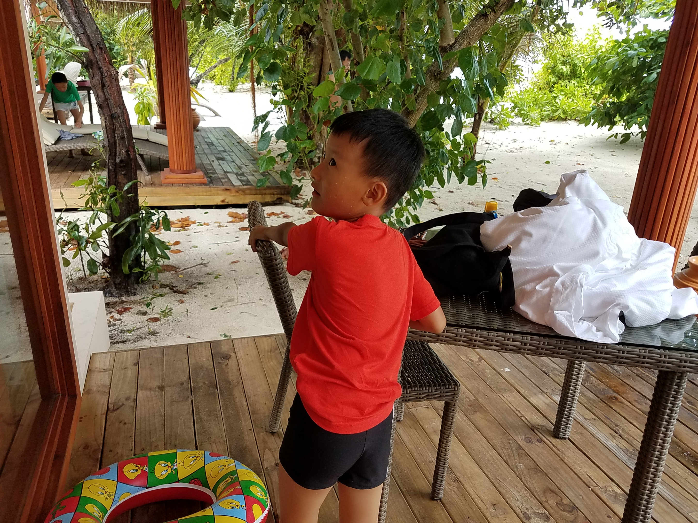
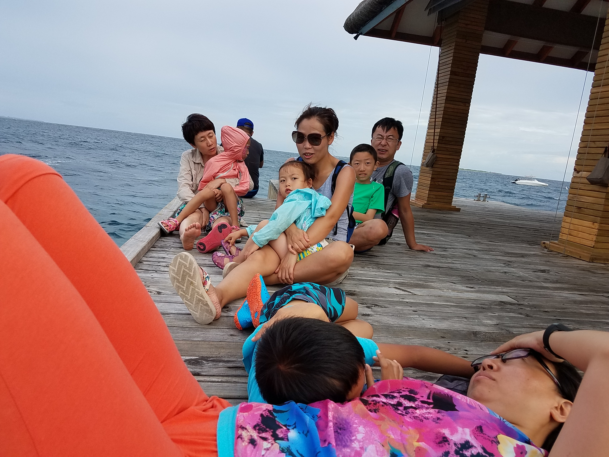

这组照片没有刻意摆拍，更像是假期里一段段顺手留下来的生活切片。木屋门口的小回头、海边抱着孩子时被风吹乱的头发、码头边短暂坐下休息的几分钟，还有泳池里慢悠悠漂着的午后，它们都比“景点打卡”更像真实的旅行。
马尔代夫的记忆不只有海水的颜色，也有家人一起行动时的节奏。有人照看孩子，有人忙着收拾东西，有人坐在船舱里避雨发呆。现在回头看，最打动人的不是某个完美画面，而是大家自然待在一起的样子。
从木屋到海边
假期刚开始，大家还在慢慢进入海岛节奏。孩子在木屋外的露台上来回跑，身边是白沙、树影和木地板，像是整个空间都在提醒人放松下来。转身望向镜头时，那种好奇和专注，比任何设计过的姿势都更有感染力。


风里的陪伴
到了海边，天气有一点阴，但并不影响整个画面的温柔。海浪轻轻拍上岸，木栈道延向远处，孩子趴在怀里，眼神却被别处的新鲜事物吸引着。那些没看镜头的瞬间，反而更像旅行真正发生时的样子。

旅行不总是完美天气
码头边休息的时候，大家随意坐成一排，孩子们有的困了，有的还在东张西望。后来突然下起雨，大家转移到船舱里，空间变窄了，节奏却慢下来了。正是这些小插曲，让整段旅程不只是“好看”，也更完整。



泳池边的夏天
旅程后半段，太阳终于亮起来了。泳池边的饮料、桌上的水珠、孩子泡在水里不愿上岸的表情，都很有夏天的质感。照片里没有太多宏大的景别，但每一个细节都让人重新想起那个热带午后。